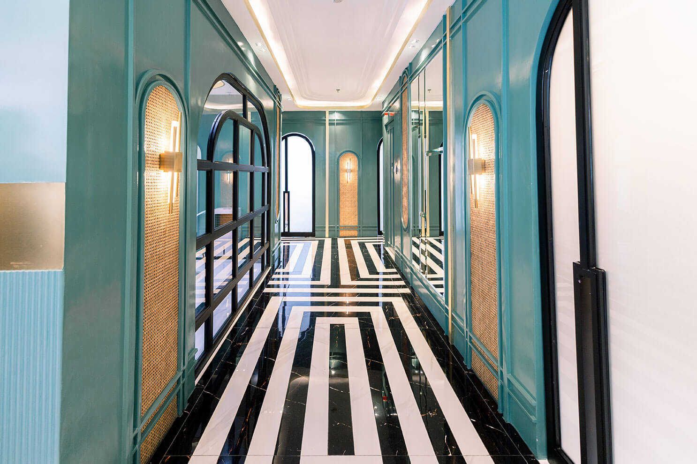
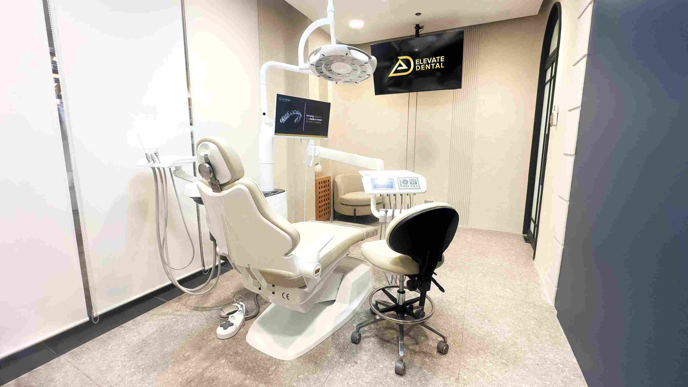

Taguig
Flagship
Mitsukoshi BGC
2F Mitsukoshi BGC, 8th Avenue corner 36th Street, Grand Central Park, Taguig
- Weekdays
- 11:00 to 20:00
- Weekends
- 10:30 to 20:00
- Sunday
- Open
- Direct line
- +63 917 159 9284
Where we are
Two clinics in Taguig, one in Mandaluyong and one in Muntinlupa.
Two of the three you can settle on this page. The third needs a phone call, and this page will not pretend otherwise.
If your case is straightforward, book whichever address is nearest. If it is complex, the phone call is worth making first, because a clinic schedule is a more reliable answer than a published one.

Read the times before you travel. They are not the same at any two of these four.
Mitsukoshi BGC
2F Mitsukoshi BGC, 8th Avenue corner 36th Street, Grand Central Park, Taguig
Shangri-La Plaza
4F East Wing, Shangri-La Plaza, EDSA corner Shaw Boulevard, Ortigas, Mandaluyong
Bonifacio Stopover BGC
Unit R303, 3rd Floor, Bonifacio Stopover Pavilion, Bonifacio Global City, Taguig
Alabang Town Center
2nd Floor, 2225 Commerce Mall, Alabang Town Center, Ayala Alabang, Muntinlupa 1780
Parking arrangements, whether validation is offered, and the nearest station or terminal with a walking time are not listed here. Rather than print a guess you would travel on, we leave it off and ask you to call the clinic you plan to visit. The number is on its card above.
Every clinic can be reached by email at info@elevatedental.ph.
Two of these frames are from the same building. They are shown because they answer a question a floor plan cannot: whether you will be comfortable waiting there.


The roster is confirmed. Its distribution across the four buildings is not, and a schedule published today would be wrong by next month anyway.
A single crown, a cleaning, a filling or a check-up
Work of this kind is handled wherever is convenient, and the protocols behind it are identical at each address. Pick the shortest journey and book it.
A rehabilitation spanning prosthodontics, periodontics and surgery
Work of this kind is worth scheduling around the people rather than the postcode. Ring the desk on that card, say what the work involves, and ask which days the relevant specialist is there.
What is confirmed today is the bench itself, and it is group-wide rather than per site. Every clinician is published by name and by field on the specialist index.
3D CBCT imaging, verified at every one of the four addresses above
It is the system that matters most for planning, because implants, root canal treatment and surgical extractions are all planned on it.
iTero intraoral scanner
Digital impressions in place of putty trays.
RayFace facial scanner
Veneer and smile planning against your own proportions.
OccluSense bite analysis
Where and how hard the teeth actually meet.
Sol Dental Laser
Soft-tissue work and gum contouring.
AirFlow guided biofilm therapy
Cleaning with air, warm water and fine powder.
Zoom whitening
Light-activated whitening in a single session.
Piezotome
Ultrasonic bone cutting that spares soft tissue.
The seven systems above are named as group equipment and are not assigned to a specific building. If a specific one matters to your case, an intraoral scan for a clear aligner plan or a facial scan for veneer design, ring that clinic and confirm it before you book.

Elevate Dental does not accept HMO or dental insurance. All treatment is self-pay, at every clinic.
Pricing does not vary by building. What a treatment starts at in Muntinlupa is what it starts at in Taguig. Choose on convenience and on where the right specialist is, never on the fee.
The published ladder, end to end
It runs from ₱1,000 for a single digital radiograph up to ₱180,000 for a full course of clear aligners. Neither is a quote from Elevate, and every figure between them is anchored to published Philippine market ranges rather than to a rate card of this practice. Your own figures are written for you at the free consultation. Confirm current consultation terms with the clinic before you book.
Price parity across sites. A treatment is quoted from the same starting figure wherever it is done, and that has not yet been confirmed for every treatment on the list. So choose the clinic that suits you, then ask for your written quote at that clinic, and the figure you are holding is the one that applies to you.
Book at whichever of the four suits your journey, or ring that clinic and talk it through first. Either way you get the same protocols, the same imaging standard and the same written quote before treatment starts.
If the case is complex enough that the specialist matters more than the distance, make the call. The desk can tell you when the right person is in that building, and a five minute conversation saves a wasted journey across the metro.
Four addresses, one standard, one quote. The only open question is which journey you would rather make.